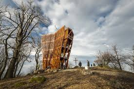

Dobogókő

A Dobogó-kő kiránduló- és üdülőhely, a Visegrádi-hegység legmagasabb hegye, tengerszint feletti magassága 700 méter. A hegycsúcson húzódik Komárom-Esztergom vármegye (Dömös) és Pest vármegye (Pilisszentkereszt) határa. A 19. század végén vált népszerű úticéllá. A hegyen található település Dobogókő néven közigazgatásilag Pilisszentkereszt része.
Földrajz
A vulkanikus eredetű kiemelkedés Pilisszentkereszt központjától északra, Budapest és Esztergom között nagyjából félúton helyezkedik el. Magassága 700 méter a tengerszint felett. A hegy tetejéről kiváló kilátás nyílik a Dunakanyarra, sőt, tiszta időben igen távoli hegyek is kivehetőek (például Mátra, Magas-Tátra). Dél felé lankásan emelkedik, észak felé viszont meredek sziklafalak és az ezekbe vágódott völgyek vezetnek a Duna felé. A legjelentősebb a Rám-szakadék.
Éghajlat
A hegyen az átlaghőmérséklet minden évszakban a magyarországi átlag alatt marad, ami nyáron kellemesebb, télen pedig a hó megmaradása révén alkalmasabbá teszi a téli sportokra
Megközelítés
Dobogó-kő Budapest felől a 11-es főúton, majd a Pomáz-Pilisszentkereszt útvonalon, Esztergom felől pedig Pilisszentlélek mellett elhaladva érhető el, az 1111-es útból Kétbükkfa-nyeregnél kiágazó 11 115-ös úton. Mindkét irányból megközelíthető helyközi autóbusszal is, a járatokat a Volánbusz üzemelteti. A Budapest felől érkezőknek a Volánbusz a H5-ös HÉV (Szentendrei HÉV) Pomáz állomásától kínál dobogó- kői eljutást.
Rám-szakadék

A Rám-szakadék a Dunakanyarban, Dömös közigazgatási területén található. A Rám-hegy tömbjébe vágódó Három-forrás-völgy különösen szép, egyik leglátogatottabb és vadregényes része.
Földrajz
Az Északi-középhegység legnyugatibb középtája a Visegrádi-hegység, kb. 14-15 millió évvel ezelőtt, igen heves vulkáni tevékenység során keletkezett. A hegy kőzeteire jellemzők a vulkáni eredetű andezit, valamint az andezittörmelékes breccsába (szögletes, éles kőzettörmelék-darabokból összecementálódott kőzet) ágyazott kőtömbök, melyekből a kőzet felszínre kerülésével az esővíz és a fagy eróziós hatásának eredményeképpen meredek völgyek alakultak ki. Az itt kialakult szakadék, szurdokvölgy a rajta átvezető turistaúton kellő óvatossággal végigjárható. A kirándulás közben érdekes földtani jelenségeket láthatunk. A turistáknak összességében 112 m-es szintkülönbséget kell leküzdeniük. A szűk, meredek falakkal (melyek magassága eléri a 35 métert, szélessége pedig több helyen 3 méternél is kisebb) határolt mélyedés a különféle vulkáni rétegek keresztmetszetét adja. A puha tufában magas, függőleges falak, a víznek ellenálló keményebb lávarétegeken pedig zúgók, vízesések alakultak ki. A szakadékon keresztülfolyó Rám-patak a Szőke-forrás völgyén keresztül a Malom-patakba folyik.
Élővilág
A szakadék élővilágát tekintve a környező hegyvidékhez kapcsolódik, de a nedves, andezites sziklákat, illetve a fatörzseket gazdagon borítják a moha-, illetve és zuzmófélék. A sziklaképződmények pihenőhelyet nyújtanak többek közt a hollónak. Az emlősök közül külön említést érdemel a nyuszt és az igen ritka vadmacska. A völgy felett magasodó Rám-hegy a Pilisi bioszféra-rezervátum egyik magterülete, ahol a hölgyestike, nagyezerjófű és mérges sás mellett a rezervátum címernövénye, a tarka nőszirom is gyakori. Az idős bükkfák odvaiban kék galamb és fekete harkály is megtelepszik.
Turizmus
A Rám-szakadék Magyarország egyik legérdekesebb és legnehezebben járható turistaútvonala, mely a Pilisi Parkerdő Zrt. kezelésében van. Az útvonal több helyen is a Rám-patak által vájt és folyamatosan nedves sziklafalon vezet át, ahol korábban csak kapaszkodó-láncok segítették a haladást. 2006-ban a Pilismaróti Erdészete 4,5 millió forintból újította fel a szurdokot, ahol pihenőket alakítottak ki, és mintegy 200 méternyi korlátot, valamint több létrát építettek fel. Ezek a kiépített kapaszkodók és korlátok segítik a turisták biztonságos közlekedését. A meredekebb részeken lépcsőszerű üregek, valamint biztonságos létrák segítik a kirándulókat. A zuhatagok melletti létrák megkönnyítik a több méteres szintkülönbségek leküzdését, bár a szétfröcskölő víz miatt a túrázók ruházata nedves lehet, így ajánlott a vízálló bakancs használata. Főként hétvégéken az igen nagy turistaforgalom miatt problémákat okoz az, ha a szurdokban mindkét irányban közlekednek. Biztonsági okok miatt a Rám-szakadékot Dömös irányából („zöld” turistajelzés) egyirányúsították. A 2020-as látogatószám megközelítette a 125 000-et.
Prédikálószék
A Prédikálószék a Visegrádi-hegység egyik hegye Komárom-Esztergom és Pest vármegyék határán, csúcsa éppen e megyehatár közvetlen közelében emelkedik. Északi és keleti lejtői Visegrád területére esnek, míg déli és nyugati oldala Dömös közigazgatási területén helyezkedik el. 639 méteres magasságával[1] a Visegrádi-hegység harmadik legmagasabb pontja (a 699 méteres Dobogó-kő és a 654 méteres Öreg-vágás-hegy) mögött, a Dunazug-hegyvidéken belül a kilencedik.
Megközelítés
Dobogó-kőről megközelíthető a piros háromszöggel jelölt turistaúton, amelyen a Vadálló-kövek érintésével a Szentfa-kápolnáig jutunk. Itt eldönthetjük, hogy a vissza irányban a Rám-szakadékon keresztül Dobogókőre térünk-e vissza vagy lefele folytatjuk utunkat Dömös irányában, amely szintén túránk kiindulópontja lehet (a bejárás iránya csak a Rám-szakadékban korlátozott, ahol csak alulról felfelé szabad haladnunk). A Prédikálószék megközelíthető még Lepencéről (zöld +), Pilisszentlászlóról (piros +), Szentendre Izbég városrésze irányából (Dömörkapu-Sikáros felől) és Pilisszentkeresztről is, utóbbi két megközelítési irány felől a Királykúti-nyereg érintésével.
Kilátó
A csúcsra érve hazánk egyik legszebb panorámája tárul elénk a gyönyörű Dunakanyarral, a Börzsöny látványával, Nagymarossal és Visegráddal, valamint a távolabbi Vác fölé magasuló Naszály képével. A hegytetőn felállított kereszt és a szikla közelében pihenésre és piknikezésre alkalmas padok és asztalok állnak a kirándulók rendelkezésére. 2016-ban 12 méter magas kilátó épült, Koller József Ybl-díjas építész tervei alapján, melynek átadására október 22-én került sor. A kilátóban 2017 májusa óta látogatottság-számláló működik; ez alapján a 2017. novemberig tartó fél évben majdnem 20 000-en mentek fel a kilátóba, ezen belül közel 8000-en szombati, több mint 6000-en pedig vasárnapi napokon. A 2020-as látogatószám meghaladta a 50 000-et
Nevének eredete
A Prédikálószék neve Kiss Lajos szerint onnan ered, hogy a hegy sziklás csúcsa szószékre emlékeztet; a mai elnevezés eszerint a német Predigerstuhl kifejezés tükörfordításaként jöhetett létre.